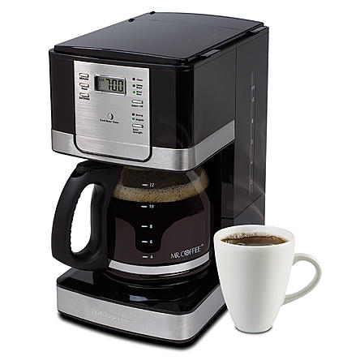
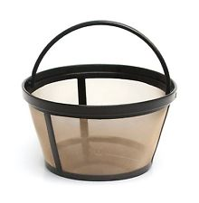
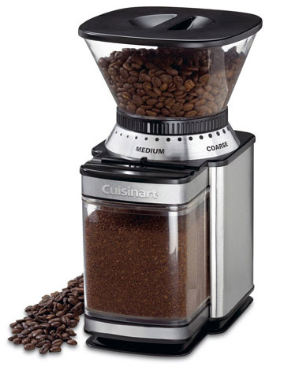
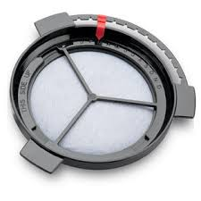
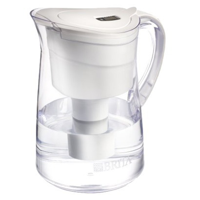
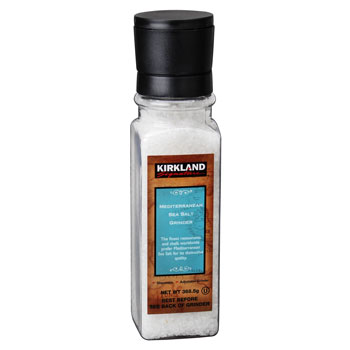

How to Make the Best Cup of Coffee
Inventory

Mr. Coffee reusable filter
Mr. Coffee brand coffee maker

Mr. Coffee water filter
Cuisine Art coffee grinder

Fresh ground salt
Brita water pitcher
Directions:
- Fill your grinder with fresh whole beans, set to 6 and push start
- Empty the coffee grounds into the reusable filter
- Add 1-1.5 rotations of salt (helps counteract the bitterness and brings out the flavor)
- Pour filtered water into the coffee maker up to the 6.25 line
- Place the water filter over the coffee filter and brew
- Serve and Enjoy!!!